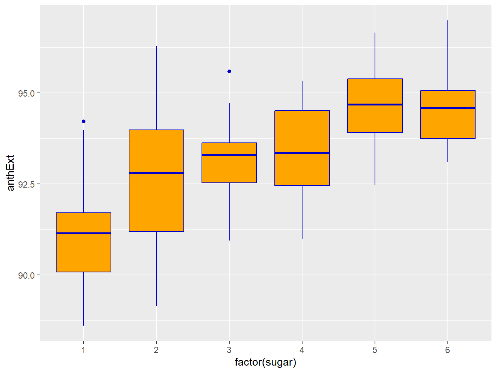
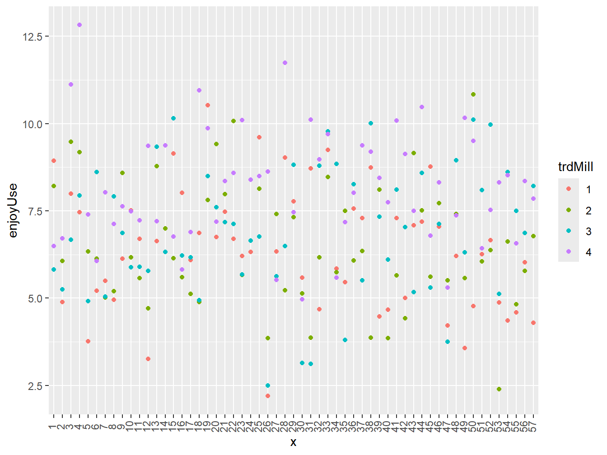
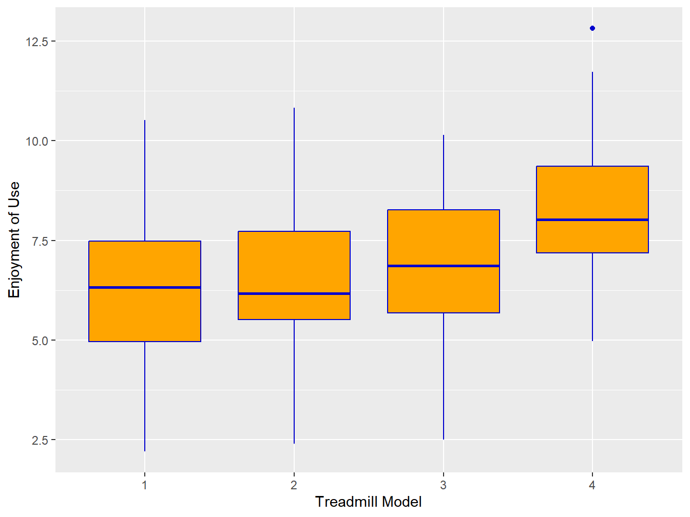

Chapter 2 Introduction
In this chapter, we will introduce terminology and briefly describe experimental designs used in a wide variety of research fields.
2.1 Terminology
Studies involve making observations on individual units under various conditions. When units have been randomly assigned to a treatment condition, they may be referred to as Experimental Units. When units have been sampled and observed from an existing population they may be referred to as Observational Units. In some studies, larger blocks of units may be randomized to a treatment, with subunits being observed (as when classrooms are randomized to various conditions), in this setting the measured units (e.g. students) may be referred to as Measurement Units.
- Experimental Studies - Observational units are assigned at random to treatments/conditions
- Experimental Factors - Conditions with two or more levels that are assigned (at random) to units. Many experiments include multiple factors and treatments are the combinations of factor levels.
- Observational Studies - Observational units are sampled from various populations/subpopulations
- Observational Factors - Set of populations/subpopulations observed in a study
- Mixed Studies - Studies that have both experimental and observational factors (not to be confused with Mixed Effects Designs)
Example 1.1 - Effect of Container Size on Food Intake
A study was conducted to compare three conditions on food intake in students (Marchiori, Cornielle, and Klein 2012). A sample of 88 subjects was obtained, and randomly assigned to one of 3 conditions involving bowl size and portion of M&Ms while watching a television program: 1) Medium portion size/Small container \((n_1 = 30)\), 2) Medium portion/Large container \((n_2 = 29)\), and 3) Large portion/Large container \((n_3 = 29)\). Researchers measured the food intake among the students. Note that this is an Experimental Study, as Subjects were assigned at random to treatments.
\[\nabla\]
Example 1.2 - Waste in the Mediterranean Sea
A study measured the amounts of Natural and Artificial floating debris at samples of transects at 14 locations in the Mediterranean Sea (Suaria and Aliani 2014). The researchers wished to compare the amounts of debris of each type among the locations. Note this is an Observational Study, as transects were sampled within the selected locations.
\[\nabla\]
Example 1.3 - Quilting Layers in Body Armour
A study was conducted to determine whether the number of quilting layers improved the fragment protective performance of body armour (Carr et al. 2012). The researchers sampled 36 specimens of each number of layers (1,2,3, and 5), assigning 12 at random to each of 3 bullet impacts (slow, fast, and edge). The energy absorbed by each specimen was measured. Note this is a Mixed Study, as Layers is Observational, and Impact is Experimental.
\[\nabla\]
2.2 Basics of Controlled Experiments
In this section we describe some aspects and terminology of controlled experiments and give brief examples of them.
- Explanatory Factors – Conditions (with 2 or more levels) that are assigned to units.
- Crossed Factors – Factors with levels that are the same within levels of the other factor(s)
- Nested Factors – Factors with levels that are different within levels of the other factor(s)
- Treatments – Combinations of factor levels given to units
- Experimental Units – Units used in the study, which are subject to randomization to treatments.
- Randomization Process - Use of random number generator to assign units to treatments
- Response(s) - Outcome measurement(s) obtained from treated units
Example 1.4 - Reading Times on 3 Electronic Readers at 4 Illumination Levels
An experiment was conducted to measure reading times on 3 e-reader devices at 4 illumination levels (Chang, Chou, and Shieh 2013). A sample of 60 subjects were randomly assigned so that 5 received each of 12 treatments (combinations of 3 e-reader models and 4 illumination levels). The experiment was Crossed in the sense that each e-reader model was set at the same 4 illumination levels (200, 500, 1000, 1500Lx). The time to complete a reading task was the measured response.
\[\nabla\]
Example 1.5 - Combability of Hair for Two Shampoo Formulations
An experiment was conducted to compare two shampoo formulations with respect to combability of hair (Garcia and Diaz 1976). A sample of 16 hair swatches were created and randomly assigned, such that 8 received shampoo A, and 8 received shampoo B. Each swatch was washed 5 times, and the combability was measured. The experiment was Nested, as the swatches receiving shampoo A were different from the swatches receiving shampoo B. Note that the swatches are the experimental units, as they are randomly assigned to treatments (shampoos). The replicates measured are the measurement units.
\[\nabla\]
2.3 Completely Randomized Design (CRD)
In the Completely Randomized Design, experimental units are randomly assigned to treatments, and responses are recorded on the units after treatments are applied. We will refer to the number of treatments as \(r\), with the number of replicates for the \(i^{th}\) treatment being \(n_i\). When all treatments have the same number of replicates \((n_1=\ldots =n_r=n)\), the design is said to be balanced. The total sample size across all treatments will be labelled \(n_T=n_1+\cdots+n_r\). When the experiment is balanced, \(n_T=rn\).
The statistical model for the One-Way Analysis of Variance based on the Completely Randomized Design is as follows, where the subscript \(i\) represents the treatment and \(j\) represents the replicate within the treatment.
\[ Y_{ij}=\mu_i + \epsilon_{ij} = \mu + \tau_i + \epsilon_{ij} \qquad i=1,\ldots,r; \quad j=1,\ldots, n_i \qquad \epsilon_{ij} \sim NID\left(0,\sigma^2\right) \]
Example 1.6 - Anthocyanin Extractability in Cabernet Franc Grapes
In a study conducted by researchers in France and Italy, Cabernet Franc grapes were harvested at \(r=6\) different classes of sugar content (176.5, 192.6, 209.3, 225.0, 242.1, and 258.5 grams/litre). While these are numeric levels, the authors treated sugar content as a factor variable. There were \(n=15\) berries within each treatment for a total of \(n_T=6(15)=90\) berries included in the study. Various physical, textural, and anthocyanin extractability measurements were made. We will focus on extraction yield of anthocyanin, which was labelled in the paper as EA%, (Zouid et al. 2013). A plot of the data is given in Figure 2.1.
## [1] "sugar" "anthExt"
Figure 2.1: Berry texture scores by sugar content
\[\nabla\]
2.4 Randomized Complete Block Design (RCBD or RBD)
In the Randomized Complete Block Design (which is often simply referred to as the Randomized Block Design), experimental units are blocked into “groups” of homogeneous units. Within each block, units are randomly assigned to the treatments, with each treatment being applied to one unit within each block. We will continue using \(r\) as the number of treatments and will use \(b\) for the number of blocks. The goal is to remove the heterogeneity across blocks to obtain more precise comparisons among treatments, when possible. In many instances, blocks will be the same individual that will receive each treatment when this is feasible. Blocks are typically treated as a random factor, in the sense that results are to be generalized across a population of such blocks or individuals. When the blocks are individuals who receive each treatment, this design is often referred to as a Repeated Measures Design or a Crossover Design.
The statistical model can be written as follows where the subscript \(i\) represents the treatment and \(j\) represents the block.
\[ Y_{ij}=\mu_i + \beta_j + \epsilon_{ij} = \mu + \tau_i + \beta_j + \epsilon_{ij} \qquad i=1,\ldots,r; \quad j=1,\ldots, b \qquad \epsilon_{ij} \sim NID\left(0,\sigma^2\right) \]
Example 1.7 - Comparison of 4 Treadmill Models for User Satisfaction
Researchers in Italy and New Zealand conducted an experiment to compare \(r=4\) treadmill models (Life Fitness, Precor, Matrix, Technogym) among \(b=57\) trained runners (Carraro, Elliott, and Gobbi 2019). Each runner rated each treadmill model in terms of seven characteristics: Running Surface, Controls, Stability and Safety, Physical Interaction, Console Readability, Aesthetic Appeal, and Enjoyment of Use. The responses were measured on visual Analogue Scales (VAS) from very unpleasant to very pleasant. We will consider Enjoyment of Use (enjoyUse) in Figure 2.2 and Figure 2.3.
## trdMill subject runSurf controls stblSfty physIntrct consRead aesthApp
## 1 1 1 8.5473 6.2358 5.0478 6.8996 6.2044 4.5798
## 2 1 2 7.4018 7.2364 6.0081 2.5457 7.1048 6.4683
## 3 1 3 5.1259 8.6687 8.8688 6.4669 4.6827 9.3432
## 4 1 4 4.8110 4.8361 9.5405 5.1269 6.7633 6.4748
## 5 1 5 10.1249 4.2111 9.5724 6.4366 6.6144 7.0896
## 6 1 6 5.1529 6.5803 8.0583 5.8038 3.7302 6.3881
## enjoyUse
## 1 8.9383
## 2 4.8944
## 3 7.9970
## 4 7.4555
## 5 3.7710
## 6 5.2169
Figure 2.2: Enjoyment of use of 4 treadmills for 57 runners

Figure 2.3: Boxplots of Enjoyment of use of 4 treadmills for 57 runners
\[\nabla\]
2.5 Overview of Some Standard Experimental Designs
In this section we list some commonly used experimental designs as well as some examples of them.
- Completely Randomized Design (CRD) – Units randomized to treatments with no restrictions on randomization process
- Factorial Experiments – CRD with two or more crossed factors. Treatment effects are made up of main factor effects and interaction effects
- Randomized Complete Block Design (RCBD) – Units are grouped into blocks. Treatments are randomly assigned to units within blocks
- Nested Designs – Levels of Factor B differ across levels of Factor A
- Crossed/Nested Designs – Designs with both crossed and nested factors
- Repeated Measures Designs – Each unit is measured multiple times
- RBD - Each subject receives each treatment once
- CRD Each subject receives only one treatment, but is measured at multiple time points
- Split-Plot Designs – Two (or more) sizes of experimental units due to randomization restrictions for factors
- Incomplete Block Designs – Block Designs with block sizes smaller than the number of treatments
- 2-Level Factorial Experiments – Several (possibly many) factors, each at 2 levels (low/high). With k factors, there will be \(2^k\) treatments
- 2-Level Fractional Factorial Designs – Experiments with only a subset of all \(2^k\) treatments to reduce cost, but still obtain estimates of main effects and lower-order interactions
- Response Surface Designs – Designs used to fit polynomial regression models to optimize responses for numeric factors
- Mixture Designs – Designs used to fit models to optimize responses among mixtures (components sum to 1) of numeric factors.
Example 1.8 - Advertising Messaging Strategy and Attitude to the Firm
An experiment was conducted to compare 4 advertisement conditions (Hyllegard, Ogle, and Yan 2009). A sample of 425 students were selected and randomly assigned to one of 4 conditions. The ads were:
- Ad1: Firm as “pioneer of industry standards in social responsibility” and US location
- Ad2: Young woman partially clothed in shower, winner of wet t-shirt contest
- Ad3: Female co-founder of porn mag for women, in jogging shorts/hoodie
- Ad4: Female and male partially clothed couple in bed, faces cropped out of image. Female on top of male.
The response was an overall attitude toward the firm based on a series of rating items. Note that each student was exposed to only one condition. Condition 1: Ad1 Only, Condition 2: Ad1&Ad2, Condition 3: Ad1&Ad3, Condition 4: Ad1&Ad4.
\[\nabla\]
Example 1.9 - Energy Efficiency of 4 Dryer Types and 3 Clothing Categories
A study compared combinations of 4 dryer types and 3 clothing categories on energy efficiency (To et al. 2007). The dryer types were (1=Electric Dryer, 2=Bi-directional Electric dryer, 3=Town Gas-Fired Dryer, 4=LPG-Fired dryer) and the clothing categories were (1=Towels, 2=Jeans, 3=Thermal Clothing). The response was Energy Efficiency (kWh/kg), and there were 3 replications per treatment.
\[\nabla\]
Example 1.10 - Comparison of 6 Chopstick Lengths on Feeding Efficiency
A study compared 6 chopstick lengths (180, 210, 240, 270, 300, 330mm) in terms of the numbers of peanuts picked up and placed in a cup (Hsu and Wu 1991). There were 31 subjects, and each subject used each chopstick. The subjects act as blocks. This can also be treated as a Repeated Measures Design, where each subject receives each treatment.
\[\nabla\]
Example 1.11 - Caffeine Content of Coke and Pepsi Products at Various Restaurants
A study compared Coca-Cola and Pepsi-Cola at various restaurants with respect to caffeine content (Grand and Bell 1997). There were 5 restaurants that sold Coca-Cola brand (1=Red Lobster, 2=Applebees, 3=McDs, 4=BK, 5=Hardees) and 7 that sold Pepsi products (6=Arbys, 7=Subway2, 8=Subway1, 9=KFC, 10=PizzaHut, 11=TacoBell, 12=Wendys). Each restaurant sold both sugar and diet formulations. There were 10 measurements per restaurant per formulation. Note that restaurant is nested within brand, but crossed with formulation.
\[\nabla\]
Example 1.12 - Zylkene v Placebo for Cats with Anxiety Over Time
A study compared the effects of Zylkene v Placebo in cats with anxiety (Beata, Cordel, and Marlois 2007). A sample of 34 cats with anxiety was obtained, and randomized to receive either Zylkene or Placebo (17 cats per treatment). Each cat was observed on a global anxiety scale at each of 5 time points. The goal is to compare the treatments and determine whether time effects occur, and whether the treatment effects differ over time.
\[\nabla\]
Example 1.13 - Effects of Seeding Rates of Hardinggrass and Ryegrass on Growth
An experiment was conducted to measure the effects of 4 rates of seeding of the perennial hardinggrass and 6 rates for ryegrass (Schultz and Biswell 1952). Hardinggrass was measured on whole (larger) plots, with levels of 1,2,3,4 pounds per acre) while ryegrass which was measured on subplots within the whole plots with levels of 0,3,6,9,12,15 pounds per acre). The experiment was conducted in 3 blocks (replicates). The response measured was the density of hardinggrass. Note that the experimental units for levels of hardinggrass are larger than those for levels of ryegrass.
\[\nabla\]
Example 1.14 - Consumer Liking of 16 Dark Chocolate Formulations
An experiment was conducted to compare consumer liking among 16 dark chocolate formulations (Hinneh et al. 2020). As consumers have quite different tastes and preferences, they are treated as blocks, and there were 16 raters. However, due to fatigue, the researchers had each consumer rate only 6 dark chocolate formulations. In a balanced experiment, each formulation would be rated by the same numbers of consumers, and each pair of formulations would be tasted by equal numbers of consumers. In this case, each chocolate was rated by 6 raters, and each pair of chocolates were rated by 2 raters. This represents a Balanced Incomplete Block Design.
\[\nabla\]
Example 1.15 - Using Seaweed to Extract Phenol from Aqueous Solution
An experiment was conducted to study the effects of 3 factors (pH (3, 9), adsorbent dosage (1, 10 g/L), and temperature (30, 60C)) on phenol extraction efficiency (%) from an aqueous solution (Ranthinam, Rao, and Nair 2011). Dried seaweed was treated with zinc chloride, then applied to one of the 8 combinations of the 3 factors. There were two replicates at each factor level. This is an example of a \(2^3\) full-factorial design.
\[\nabla\]
Example 1.16 - Factors Affecting Damage to Motorcycle Wheels
An experiment was conducted to determine the effect of 5 factors on the Crush Radius on the front wheel of a motorcycle (Tan et al. 2009). The factors were: Impact speed (3, 6), Impact Mass (51.18, 101.33), Tire Pressure (148, 252), Striker Contact Geometry (0.03, 0.10), and Impact Offset Distance (0, 0.108). Although there are \(2^5 = 32\) combinations of the factors, the experimenters ran it in \(2^{5-1}=16\) combinations to reduce costs. There were four replicates at each combination of factor settings. This is an example of a \(2^{5-1}\) fractional factorial design.
\[\nabla\]
Example 1.17 - Optimizing Qualities of Potato Chips
An experiment varied 3 factors to optimize responses regarding potato chips (Song, Zhang, and Mujumdar 2007). The factors (and levels) were: Vacuum microwave pre-drying time (0.95, 3, 6, 9, 11.05 minutes), Vacuum temperature (83.18, 90, 100, 110, 116.82C), and Frying Time (11.59, 15, 20, 25, 28.41 minutes). Three responses were measured (analyzed one at a time): Moisture Content, Fat Content, and Breaking Force. The goal was to choose factor levels that optimize the response. This is an example of a response surface design.
\[\nabla\]
Example 1.18 - Optimizing Antibacterial Effect of Mixtures of 3 Essential Oils
An experiment varied mixtures of 3 types of essential oils in terms of optimizing a response (Ouedrhiria et al. 2016). The three oils were: (O. compactum, O. majorana, and T. serypyllum). Three responses were measured (analyzed one-at-a-time): minimum inhibitory concentration (MIC %) of 3 types of bacterium: B. subtilis. S. aureus, and E. coli. The goal was to choose the mixture of the 3 types of essential oils that minimizes the MIC of the bacterium.
\[\nabla\]
2.6 Overview of Observational Study Designs
- Cross-Sectional Studies – Observations made from populations/subpopulations at a single time point or interval.
- Prospective Studies – Groups are formed by levels of a potential causal factor, then observed over time for some measurable outcome.
- Retrospective Studies – Studies where subjects are identified based on the outcome of interest and potential risk factors are identified that previously occurred.
- Matching – Subjects from different populations are matched, based on external factors, similar to blocking in experimental studies.
Example 1.19 - Medical Profession Students Attitudes Toward Interdisciplinary Studies
A survey was conducted to measure students’ in medical professions Readiness for Inter-Professional Learning (Keshtkaran, Sharif, and Rambod 2014). Students were sampled from 3 groups: Nursing, Science in Surgical Technology, and Medicine, and given the scale measuring their readiness. This was cross-sectional in the sense that it was taken at one point in time.
\[\nabla\]
Example 1.20 - Blood Transfusions and Caesarean Deliveries in 3 Pakistan Hospitals
A prospective study was conducted to compare birth deliveries in 3 Pakistan hospitals over the period of January-June 2010 (Ismail et al. 2014). In particular, the authors were interested in whether the mother had a Caesarean Section and whether the patient had a subsequent blood transfusion.
\[\nabla\]
Example 1.21 - Fertilization Time-Lapse Variables and Embryo Sex
A study at a University-affiliated private fertility center considered the gender of an embryo, as well as various cleavage timing variables, from the time of the fertilization, retrospectively (Bronet et al. 2015). The researchers were interested in determining whether any of the timing variables could predict the eventual sex of the embryo.
\[\nabla\]
Example 1.22 - Recidivism Rates for Juvenile Offenders
A study compared recidivism rates among juvenile offenders in 2 conditions: transferred to adult court and not transferred to adult court, that is, tried in juvenile court (Bishop et al. 1996). A database of past criminal record including number and severity of prior and current charges, gender, and age was created, and matches were created where within each pair, one had been transferred, the other had not. Subsequent recidivism was observed within each pair.
\[\nabla\]